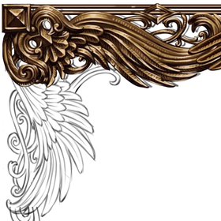
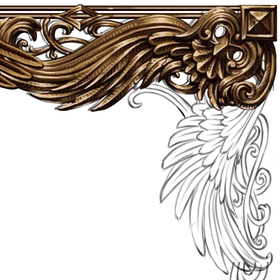
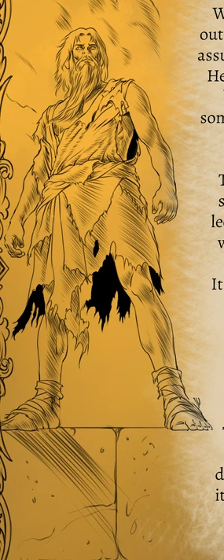
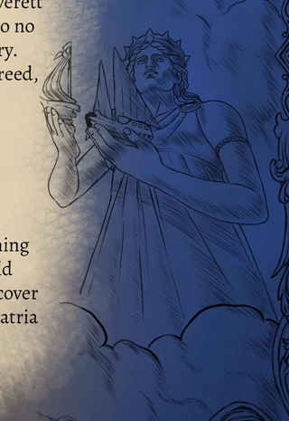
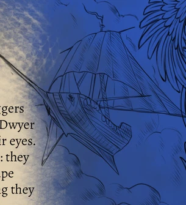
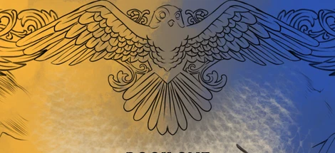
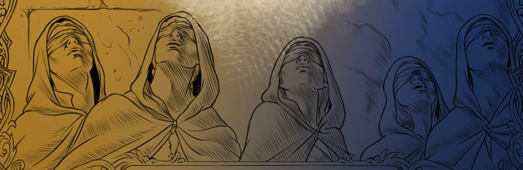

This is an artwork-component specimen page, not a site page — nothing
here is a real layout. It exists to check that the components in
css/components.css hold up at realistic size, on both a
380px pane and a fluid desktop pane, before any real page is built with
them. Filler text below is for sizing only, not final copy.
Corner ornaments (raster, fixed size, capped below their native @2x
export) with a plain bronze hairline running the sides — not tiled
edge assets, which the brand library itself rates "fair" to "poor"
for tiling. Any block of content can sit inside .frame__content.
380px


The Burned Name
Everett Dwyer travels with Rhi and Quillion, carrying a darkness magic that has aged him before his time.
Fluid / desktop
The Burned Name
Everett Dwyer travels with Rhi and Quillion, carrying a darkness magic that has aged him before his time. The Expatria order has its own reasons for watching him do it.
mark-crown as header, mark-foot as its closing
counterpart. Both raster, both centred with the artwork's own rail
continuing as a plain hairline to the full container width.
380px
Sean Bobby Kerr
Fluid / desktop
Sean Bobby Kerr
Vector, tiled via mask-image, coloured with
background-color — scales to any width without the
raster resolution ceiling. Three sizes shown at their intended use
width, not stretched to the pane.
380px
Small — inline / compact break
Medium — default section break, matches the text measure
Fluid / desktop
Medium — default section break
Large — wide section break
Back-cover illustrations. figure-plinth,
figure-crowned and motif-ship carry a sliver
of the neighbouring blurb-text column in their source crop (see
brand_assets/README.md's confidence notes) —
motif-winged clips into the "BOOK ONE" lettering at its
lower edge. A directional fade dissolves each intrusion into the page
ground rather than showing it, which also stops the rectangle reading
as clip art pasted on black.
380px

Fluid / desktop — all five figures




Two panel surfaces for content blocks — not full-bleed hero grounds.
.bg-parchment tiles the parchment glow texture at low
opacity over the Parchment token. .bg-divide is a CSS
gradient built only from the eight palette tokens, restrained rather
than a literal half-gold half-blue split.
380px
Book two
The Scroll of Recall
A restrained warm glow over a mostly-dark ground.
Fluid / desktop
Book two
The Scroll of Recall
TODO: Sean's paragraph on book two.
A restrained warm glow over a mostly-dark ground — the back cover's warm light in a cold room, without spending the gold budget on a full split.